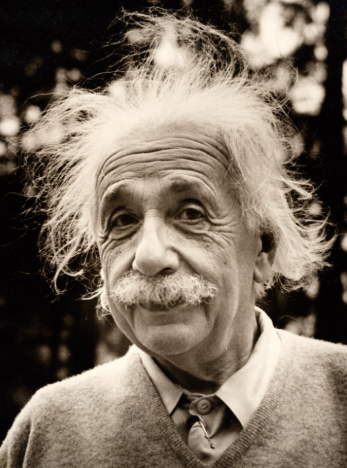
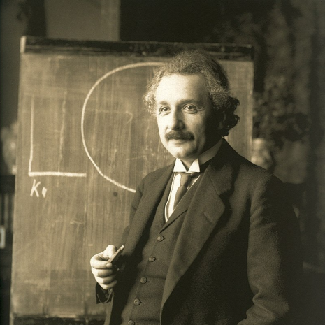
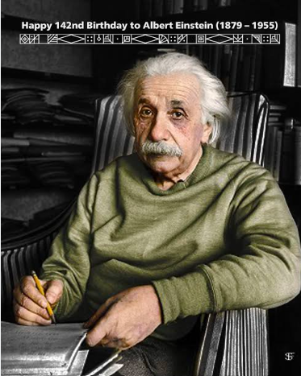

My Thoughts on Science
Science is not only about finding answers. It is also about asking questions and exploring new ideas. I believe that curiosity is the key to understanding the world around us.
Every scientific discovery begins with a question.
Read More

The Power of Imagination
Imagination helps us think beyond what we already know and discover new ideas. I believe imagination is just as important as knowledge because it allows us to explore new possibilities.
Many great discoveries begin with a simple question or a creative thought.
Read More

The Journey Begins With You
The loosely translated Chinese proverb states that “the journey of a thousand miles begins with a single step.”
In other words...you gotta start somewhere! Have you committed to transforming your instruction for the new WI science standards?
Read More